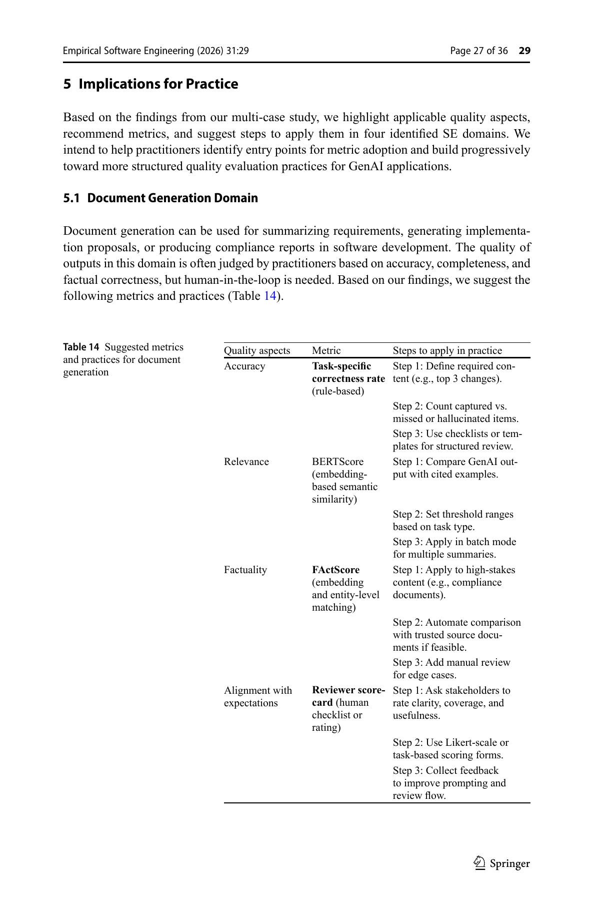
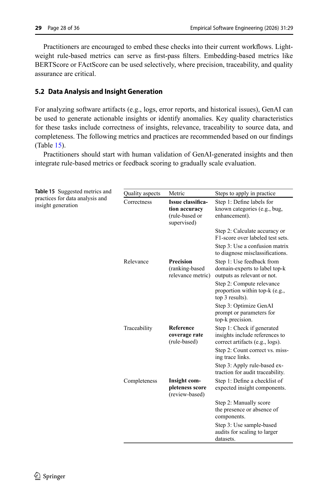

本篇目录
1. 作者研究了什么企业、什么业务？2. 原本有哪些问题？14个用例逐项读3. 每类问题靠什么证据支持？4. 作者怎样解释原因？是否真的找到了管理根因？5. 为什么用这些研究方法？具体怎么操作？6. 提了什么解决方案？每项解决什么问题？7. 实施了吗？哪些成果可以验证？8. 精华、创新点与不足9. S公司应借鉴什么，怎样实际用？10. 关键段落学术翻译与术语辨析11. 复读路线与证据页软件工程中生成式人工智能应用的质量评价：一项多案例研究
原题： Evaluating the quality of GenAI applications in software engineering: a multi-case study
作者： Liang Yu、Emil Alégroth、Panagiota Chatzipetrou、Tony Gorschek
发表： Empirical Software Engineering，2026，31，文章29；在线发表于2025年12月5日。DOI：10.1007/s10664-025-10759-2。
阅读范围： 本次阅读用户提供的正式出版PDF正文第1—34页，核对表1—17及图1—8的关联说明，并对表6、7、14、15渲染核查。第34—36页参考文献与声明用于身份及来源定位，不代表读过全部被引文献。未取得保密访谈逐字稿，未另外核对Figshare附件。下列“PDF页”均为阅读器物理页，与本篇页码一致。
先建立正确认识： 这篇论文调查的是企业已经怎样评价GenAI应用的输出质量。它不是证明某套管理方案使缺陷率下降的干预研究。对S公司最有价值的是“业务场景—质量要求—指标—评价方式”的连接方法，以及来自企业的实际困难；不宜把它当作质量改善幅度的实证依据。
1. 作者研究了什么企业、什么业务？
研究以三个匿名企业项目A、B、C为案例，企业名称未披露。三个项目的产品均已成熟，但这不等于其中所有GenAI用例都已全面成熟或大规模部署。作者按组织选取案例，再在组织内收集具体应用用例。PDF第6页，表1
| 案例 | 企业业务与规模信息 | GenAI应用所在的工作环境 | 阅读时应注意 |
|---|---|---|---|
| A | 金融科技、移动数字支付，金融服务产品；工程师超过500人，全球分布开发 | 技术文档、故障报告、开发辅助等软件工作 | 不是直接研究支付交易决策质量 |
| B | 电信计费，运营支持服务；工程师超过1000人，全球分布开发 | 代码评审、CI日志、故障单分配、测试等 | 不是电信广告业务 |
| C | 电信网络管理；工程师超过200人；表1将分布式开发标为“No (nationally)” | 产品信息问答、代码仓库分析、日志与评审等 | 论文没有提供可识别企业的具体名称；不将此项扩写为全球分布开发 |
研究覆盖文档生成、数据分析与洞察、客服/知识问答、代码生成四个应用域。“客服”分类中也包含面向开发者的内部问答，因此不能将全部用例理解为面向外部消费者的客服系统。
表2列出30名参与者，涵盖开发、管理、架构、安全、运维、文档六种岗位，工作经验4—25年。实际组织了3场工作坊和23次访谈；“30名参与者”“23次访谈”“14个用例”是不同单位，不可互换。作者没有给出23次访谈与30人的逐人对应关系。PDF第7—10页
2. 原本有哪些问题？14个用例逐项读
需要区分两层问题：企业原业务为什么需要GenAI，以及使用GenAI以后又出现了哪些输出质量问题。表5主要回答前者，第4.2节访谈主要回答后者。下表保留全部14个用例，并明确哪些地方没有量化证据。
| 用例 | 原业务痛点与GenAI用途 | 文中记录的生成质量问题或限制 | 直接定位与证据强度 |
|---|---|---|---|
| UC1 智能聊天机器人 | 大量产品资料中关键词检索效果差；根据客户产品文档检索回答 | 错误检索或过时内容造成困扰与追加提问；还需控制敏感信息和危险操作 | 表5，p.14；§4.2.3，pp.22—23，访谈描述 |
| UC2 CodingBuddy | 开发生产率需求；在IDE内提供代码建议，减少离开编程环境查资料 | 与UC9一起报告复杂任务仍需人工调整，没有逐用例缺陷率 | 表5，p.14；p.24，开发者陈述 |
| UC3 GitLab评审 | 等待合并请求批准；评审SQL需要数据库专业知识 | 排名靠前的建议未必最相关，可能遗漏重要问题；需人工修订保证准确、完整 | 表5，p.14；pp.18—19 |
| UC4 日志分类 | 失败功能测试日志难以分组；受访者称每天产生数千条日志 | 术语或缩写歧义造成错误分类，需专家重审；相似提示的输出一致性也是关注点 | 表5，p.14；p.19；表13，p.26 |
| UC5 仓库分析 | 大型仓库的依赖、技术债和根因难以分析 | 不能充分理解高度定制代码，提出错误建议 | 表5，p.14；p.21 |
| UC6 开发者聊天机器人 | 知识共享存在障碍；为开发者提供代码和知识 | 代码片段与其他依赖不兼容，导致返工 | 表5，p.14；p.23 |
| UC7 故障报告分析 | 多组件系统的故障根因难定位 | 跨模块依赖理解不足，分析不完整或过于笼统，需要进一步人工调查 | 表5，p.14；p.21 |
| UC8 文档聊天机器人 | 海量文档关键词搜索效果差、人工投入高 | 错误检索、内容过时与追加提问；正确性和知识依据对齐需要评价 | 表5，p.14；pp.22—23 |
| UC9 开发辅助工具 | 代码生产率需求；基于既有代码生成上下文适配的建议 | 简单上下文帮助较大，复杂任务仍需人工调整 | 表5，p.15；p.24；提及Codeium只是一个实例 |
| UC10 文档多智能体 | 处理长篇文档的时间和精力负担；生成、总结、完善文档 | 检索片段排序不当会遗漏关键内容；过于笼统或细节过多，不符合所需粒度 | 表5，p.15；p.19 |
| UC11 智能代码评审 | 获得适当代码评审的等待时间较长 | 与UC3共同报告：建议排序、相关性和准确性不足；不能把自动生成评论等同于有效评审 | 表5，p.15；p.19 |
| UC12 CI日志异常检测 | 日志混杂多种错误，人工定位重要问题困难 | 误报需要人工纠正；可发现异常不等于每个告警都正确 | 表5，p.15；p.21 |
| UC13 测试用例生成 | 手工测试耗时，测试维护困难 | 简单场景有帮助，但可能遗漏需要深入理解需求的关键边界情形 | 表5，p.15；p.24 |
| UC14 故障单管理 | 将故障单交给正确开发团队的前置时间约1.5周；生成组件和团队排序 | 需要检查分配准确性及其依据透明性；与UC4共同叙述分类困难，但没有独立改善数值 | 表5，p.15；pp.19、26 |
这些案例的共同点是：结果看起来像完成了任务，但不一定覆盖了真正需要处理的事项，也不一定符合具体系统的上下文。 这比“AI会犯错”更接近可以调查的问题。文中还报告输入资料缺失、格式不佳导致输出错误与人工介入，但没有证明所有问题均由数据质量引起。
3. 每类问题靠什么证据支持？
3.1 这篇论文有哪些数据，哪些没有？
| 证据 | 原文位置 | 能支持什么 | 不能支持什么 |
|---|---|---|---|
| 3个案例的行业、组织与产品背景 | 表1，p.6 | 说明问题发生情境及案例差异 | 推算全行业普遍发生率 |
| 30名参与者、3场工作坊、23次43—55分钟访谈 | 表2与§3.3，pp.7—10 | 说明资料如何取得和涉及哪些岗位 | 视作30个独立企业或23个实验样本 |
| 14个用例的前置条件、任务和预期结果 | 表5，pp.14—15 | 比较用途、原业务痛点及评价对象 | 将“预期结果”当作已经达到的验收结果 |
| 28个带场景编号的指标项 | 表6，p.16 | 说明企业用哪些数据评价哪些用例 | 声称发现28个完全不同的质量维度 |
| 实际使用指标与可考虑的研究指标 | 表7，pp.17—18 | 区分实践和候选方法 | 说BERTScore、FActScore等已经在案例中验证有效 |
| 输出缺陷和返工叙述 | §4.2，pp.18—24 | 支持“受访者经历了此类困难” | 得出真实缺陷率、节省工时或因果效应 |
| 五类评价挑战 | 表13，p.26 | 形成调查维度与管理讨论起点 | 把五项都认定为S公司已有缺陷 |
| 推荐指标及实施步骤 | 表14—17，pp.27—30 | 形成可测试的改进建议 | 当作已经实施的干预结果 |
表5中“约1.5周”是UC14原有故障单分配问题的场景信息；“每天数千条日志”“数百页文档”是受访者的工作量描述。第32页“10%的不准确可能永久损害客户信任”也是受访者观点，既不是实测缺陷率，也不是经验证的客户流失阈值。
3.2 28个指标到底是什么意思？
表6含8项Acc、5项Corr、3项Align、1项Cons、6项Rel、1项Tran、1项Comp、1项Sec、2项Fac，共28个场景指标实例。例如Acc.A针对UC3的需求与代码材料，Acc.F针对UC12的CI构建日志。名称相同不意味着分母、判断条件和误差代价相同。
表6标题包含“definitions and formulas”，但PDF可见表格实际只列编号、指标ID、数据集、质量特征与用例。作者说明详细定义和公式另放Figshare。本次未读取该附件，因此不把未展示的公式写入报告，也不能据此直接复制一套可计算量表。
3.3 原文中需要保留的表格不一致
核对PDF图像后可见，表6将Comp.A映射到UC7，表7却把Completeness放在UC5下；表9又将完整性归于UC7。表6把Align.C归UC8、Fac.B归UC6，而表7相应行的对齐/事实性分配出现交换。表9的UC12相关性与表7/表6也不能完全逐项对应。表6 PDF第16页；表7 PDF第17页；表9 PDF第20页
因此，本报告根据访谈正文解释真实问题，涉及精确“指标—用例”编码时保留冲突，不替作者静默修表。这不会推翻研究的全部贡献，却降低了直接复用其映射表作为标准模型的可靠性。
4. 作者怎样解释原因？是否真的找到了管理根因？
论文主要采用主题分析归纳困难，并没有对每个缺陷完成故障复现或独立因果检验。要把三类解释分开：
| 层次 | 文中的解释 | 证据和限度 |
|---|---|---|
| 输出层机制 | 检索排序遗漏关键片段；歧义缩写引起分类错误；定制代码和跨模块依赖难理解 | 来自参与者描述，未展示逐条原始日志重放 |
| 评价流程困难 | 人工核验耗时、评价者可能不一致，提示量上升时难扩展 | p.25“每天数千条提示”的访谈例子，不是工时实验 |
| 指标与组织需求不匹配 | 指标值缺乏可解释意义；团队不熟悉学术指标；缺少适合本地任务的参考数据 | p.26及§7，可解释为什么指标不容易被采用，但不等于企业管理人员失职 |
表13的五项挑战为：检索分块大小、人工核验、输出一致性、上下文嵌入、指标可解释性。小片段可能检索更精准却失去上下文；大片段保留上下文却稀释相关内容，这体现的是取舍，不能简单写成“分块越小越好”。
导师式判断： 论文能帮助提出候选原因及访谈追问，却不足以替S公司完成原因诊断。对于同一个“遗漏”，至少还要检查任务要求是否明确、数据是否实际可见、输出环节是否忽略、检查规则是否覆盖、问题修正是否进入后续验证。四个环节是调查路径，不是预先判定的四项缺陷。
5. 为什么用这些研究方法？具体怎么操作？
作者的研究问题是“实践中用什么指标、怎样评价、遇到什么困难”，因此采用描述性的多案例研究，而不是随机实验或算法竞赛。单一指标不能先验覆盖不同企业的需求，先从真实使用中归纳有其合理性。PDF第5—12页
- 目的性选样。 从既有企业联系中选择已经开发或探索GenAI应用的组织，兼顾行业、规模与采用情况。好处是能取得有经验的受访者；限制是合作关系和自选择可能影响代表性。
- 工作坊提取实际用例。 每场约90分钟：10分钟介绍、40分钟填写与展示用例、40分钟讨论归类。模板记录名称、用途、目标用户、待解决问题、前置条件、后置条件。明确排除尚未开展的纯设想用例。
- 半结构化访谈追问评价。 先问岗位和参与情况，再问指标、计算与检查方法、组织情境及遇到的困难。先试访谈修订提纲；正式访谈43—55分钟。工作坊广泛发现问题，访谈解释个体具体经历，二者用途不同。
- 主题分析。 从记录提取初始编码，细分含糊概念，把相关编码聚成类别，再形成主题。例：“accuracy”细分为文档检索准确性与代码评审准确性。三位作者迭代讨论编码，参与者反馈帮助纠偏；文中没有报告可供复算的编码一致性系数。
- 跨案例比较。 比较相同问题在不同场景中的表现，而不是按出现频率机械给所有指标排名。作者也承认工作坊讨论热度不等于客观重要性。
- 将实践与文献映射。 从作者先前的滚雪球文献综述提取研究指标，两名作者独立判断相关性及场景适配，再讨论并请领域参与者反馈，形成“可考虑采用”的映射。
这是一种“从工作现场到概念与评价方法”的路径，ISO质量特征提供组织语言，案例研究与主题分析承担取证和归纳。不能将采用ISO名称、开了工作坊与构建了因果理论等同。
6. 提了什么解决方案？每项解决什么问题？
第5节是根据发现提出的实践启示，不是已完成试点的管理方案报告。
| 方案 | 要解决的问题 | 作者给出的具体操作 | 在S公司使用前的必要调整 |
|---|---|---|---|
| 任务专用正确率与检查表 | 长文摘要漏项或编造，笼统评分无法定位 | 明确必需内容，计数已覆盖、遗漏、虚构项，用检查表结构化评审 | 将完整性与正确性分开，不能用一个总分掩盖遗漏 |
| 语义/事实评价辅助 | 仅字面相似不能反映输出质量 | 考虑BERTScore、FActScore，对高影响内容用可信资料验证 | 先验证与运营判断一致性，不把相似度当作策略正确性 |
| 专家标注前k条建议的相关性 | 排名靠前的建议未必有用 | 标注相关与否，计算前k条相关比例，反馈调整提示或参数 | k、相关标准和重大遗漏需预先定义；只评前k条可能漏掉必处理对象 |
| 引用覆盖与来源追踪 | 洞察缺少可追溯依据 | 检查是否引用正确材料，统计缺失或错误链接 | “有链接”和“链接支撑该结论”分开检查 |
| 预期组成清单与抽样审计 | 生成洞察不完整，人工全检难扩展 | 明确应有组成，人工判定存在/缺失，以抽样扩展检查 | 完整性应按任务对象和义务判断，不能仅检查栏目 |
| 人工、规则、AI辅助组合 | 复杂判断难自动化，人工成本高 | 可核事实自动检查，情境判断由专家，AI辅助评分 | 要评价检查器误判与新增人工投入，不能只看检查通过率 |
表16另讨论客服回答、角色适配和敏感信息检查；表17讨论单元测试通过率、意图符合度、代码结构和圈复杂度。它们展示不同业务需要不同评价方式，不构成要求S公司同时研究这些技术主题的理由。
7. 实施了吗？哪些成果可以验证？
实际完成的研究活动： 三个企业案例的数据收集、用例整理、指标归纳、评价方法分类和挑战分析。GenAI用例来自已经使用、探索或测试的实践，而非单纯未来设想。
能够从论文检查的成果： 14个用例、28个场景指标实例、人工/自动/AI辅助三种评价方式、五类挑战、四个应用域的实践建议，以及相应资料收集方法。
没有完成或没有报告的验证： 没有将表14—17作为统一干预包实施并给出前后缺陷率；没有对全部用例测量总人工工时；没有随机对照、统计显著性或跨企业推广试验。访谈中的“更快”“减轻负担”是实践者感受，不能写成作者测量的效率提升。
对于MEM论文，现状访谈和管理方案可参考这篇的组织方法，但S公司还需增加它未完成的环节：在相同口径下测量基线，实施明确措施，保留对照或可比任务，评价质量与人工投入的变化。
8. 精华、创新点与不足
最值得读的精华。 第一，质量评价从本地任务而非通用分数出发；第二，把“测什么”和“由谁、用什么方式测”分开；第三，指标必须能支持行动，0.83这类数字如果不能定位哪些要求未满足，就不容易用于改进；第四，文献中的精致指标与企业可取得的证据之间存在转换成本。
论文的主要贡献。 在三个企业项目中汇集实际评价实践，再与学术指标对接。这是经验与方法整理的贡献，不是首创某个通用质量算法，也不是证明所有生成任务可以共用28项指标。
需要批判阅读的地方。
- 目的性样本有限，金融科技与电信中的软件工作不能自动代表广告运营。
- 主要依赖自报资料，作者明确承认可能夸大成功或少报问题；原始逐字稿保密，外部复核受到限制。
- 指标同名异义、若干用例映射存在上述不一致，直接照搬表格会把概念混淆带入论文。
- 表14—17的自动评价建议未实测其判别效度；不同指标的原理应回到原始方法论文核对。本文的简化描述不应成为实现说明书。
- 三种评价方式的表12是本研究归纳，不能由某列未勾选推导“该指标在技术上永远不能用这种方法评价”。
- 缺少企业干预前后数据，不能给出质量与效率联合改善的因果结论。
9. S公司应借鉴什么，怎样实际用？
当前初稿是《S公司智能体生成SP广告调整建议的质量改进研究》。对象为持续调整任务中各轮智能体建议，与人工修改结果分别记录。最接近本篇的不是纯文本写作，而是文档生成与数据洞察相结合的任务。
| 可借鉴思路 | S公司可以产出的具体材料 | 必须保留的边界 |
|---|---|---|
| 用例模板 | 一份SP调整任务卡：对象范围、有效目标、预算约束、数据时间窗、允许不调整的条件 | 任务目标来自原记录，不由研究者事后补写 |
| 情境化评价 | “要求事项—输出位置—证据—判定—理由”表，分别评价完整性、正确性、适用性 | 运营修改可能是合理取舍或新增要求，不全算缺陷 |
| 多角色访谈 | 运营解释专业要求，开发解释如何转成指引，测试解释检查与回归，产品协调要求变更 | 多人观点不等于事实，多方意见需与版本和任务记录互证 |
| 轻量检查与专家判断结合 | 对象覆盖、数值和约束先规则核验；调整时机和幅度由运营说明理由 | 自动检查器需要人工校准，不由生成模型给自己作最终验收 |
| 指标支持行动 | 按任务聚合“曾出现已确认遗漏/错误”，同时保留版本级记录和生成轮次 | 多轮任务缺陷机会更多，前后比较要控制轮次与版本覆盖，不能仅比较总比例 |
| 从现状研究走向改善验证 | 将已确认的失效条件转为检查条目和回归样例，再对连续真实任务观察 | 必须包括正常、失败、资料不足及合理暂缓任务，不能只挑改善成功案例 |
本篇适合成为文献综述中“企业GenAI应用质量评价实践”的重要参考；在研究设计中用于支持“先定义业务要求，再组合评价方式”。它不能单独支撑“企业存在需求管理缺失”或“某管理方案能够节约多少人力”。
10. 关键段落学术翻译与术语辨析
段落一：研究边界，PDF第6页
“Furthermore, the study is descriptive, aiming to describe the use cases that the purposively sampled organizations currently have for GenAI.”
译文： 此外，本研究属于描述性研究，旨在描述通过目的性抽样选取的组织目前已有的生成式人工智能用例。
怎么理解： descriptive译为“描述性”，不能扩写成“验证性”；purposeful/purposive sampling是按研究目的选取有信息价值的案例，不是随机抽样。这里已经限定了作者结论的强度。原文
段落二：为什么不能只看自动生成，PDF第19页
“the outputs of GenAI are not always optimal and often require human refinement to ensure completeness and accuracy.”
译文： 生成式人工智能的输出并非总能达到理想状态，往往仍需人工修订，才能确保其完整性和准确性。
怎么理解： 这是参与者提供的观点。它提示要记录修订前后的内容，但并没有证明全部人工修订都为纠错，更没有测量人工修订的总成本。原文
段落三：指标需要适配情境，PDF第32—33页
“Practitioners should treat contextual evaluation not as a static task, but as an iterative process.”
译文： 实践者应将结合具体情境的评价视为一个迭代过程，而不是一次性的静态任务。
怎么理解： 可以在业务变化后修订标准，但必须保存版本和适用时间。不能为了让改进后的结果更好看，悄悄改变前后评价尺度。原文
| 术语 | 本文中的合适译法 | 不宜混同 |
|---|---|---|
| context-specific metrics | 结合具体应用情境定义的指标 | 不是随意制定、无需验证的主观分数 |
| experiment-driven metrics | 在学术实验研究中开发或采用的指标 | 不表示本篇已经用它们开展企业实验 |
| accuracy / correctness | 准确性 / 正确性，具体按指标定义区分 | 不能只凭中文译名推断分子分母 |
| completeness | 完整性 | 不等同篇幅长、栏目齐全或建议很多 |
| alignment | 与指定依据或期望的符合程度 | 此处通常不是宏观的AI价值对齐 |
| postconditions | 用例结束时应满足的条件 | 不是已验证达成的实施成果 |
| human refinement | 人工修订、完善 | 可能包含纠错、表达优化和经营取舍，不能一律算返工 |
11. 复读路线与证据页
先读表5（业务问题和用例），再读第4.2节（真实输出困难），接着读第3节（证据怎么取得），最后读表14—17和第6节（建议与局限）。这样能避免看到“推荐指标”就误以为“效果已经验证”。
- 表5：14个用例，PDF第14页
- 表6：指标实例，PDF第16页
- 表7：已使用与可考虑使用的指标，PDF第17页
- 表14：文档质量检查建议，PDF第27页
- 表15：数据洞察评价建议，PDF第28页
- 效度威胁，PDF第31页
书目核对提示： 用户附带CIW将年份字段记为2025，同时记录卷31、期2、文章29；正式PDF页眉为2026、31:29，首页同时写明在线日期2025-12-05。引用正式卷次时采用2026，并可另注明在线发表时间，不能把同一研究拆成两篇。
原文图表对照
下列为用户提供PDF的原页渲染，保留表头、注释和上下文。阅读报告中的解释与作者原图分开呈现。

